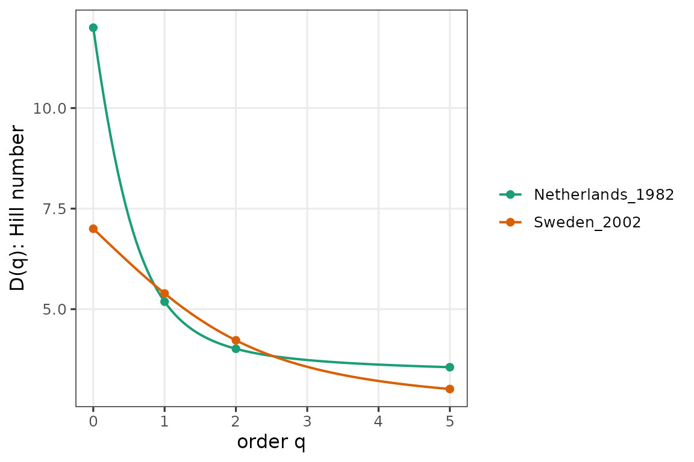
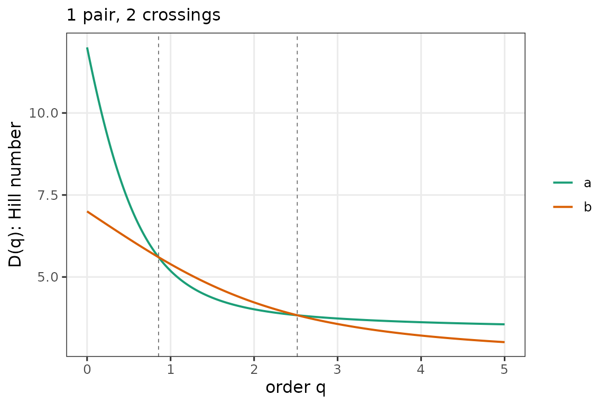
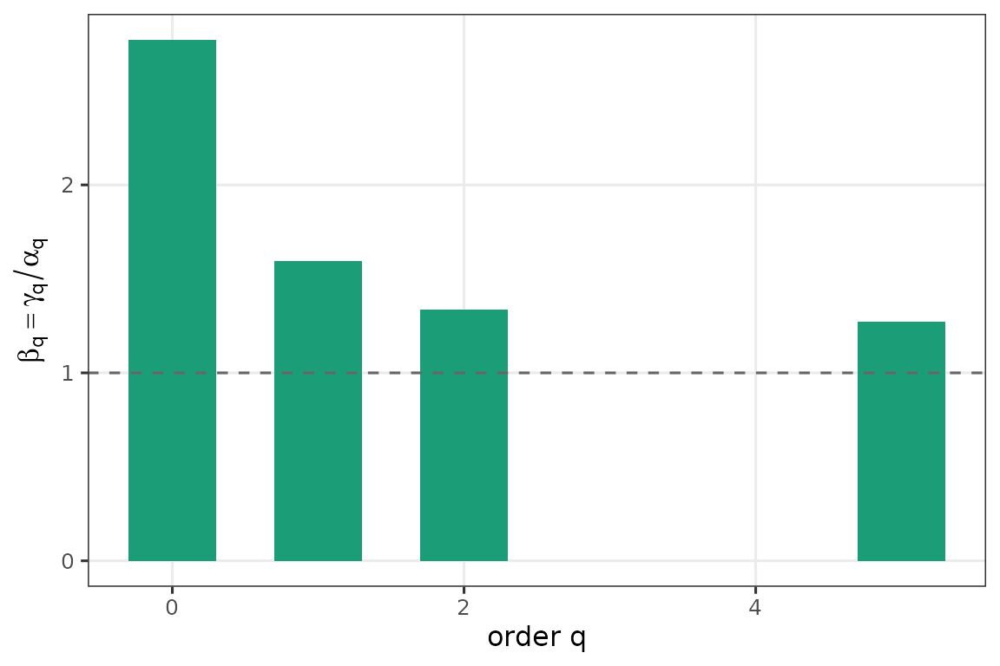

This vignette walks through the full pipeline on live ParlGov data. On first run it
downloads the current view_election CSV and caches it in
tools::R_user_dir("partyscape", "cache").
pg <- fetch_parlgov()
head(pg[, c("country", "date", "party", "seats")])
#> country date party seats
#> 1 AUS 1901-03-30 PP 32
#> 2 AUS 1901-03-30 FTP 26
#> 3 AUS 1901-03-30 ALP 15
#> 4 AUS 1901-03-30 none 1
#> 5 AUS 1901-03-30 one-seat 1
#> 6 AUS 1903-12-16 PP 26Reshape to a seat-share matrix
parlgov_seat_shares() produces a
party-labeled matrix: one column per ParlGov
party_id, preserved across elections. Rows are country-year
elections. No row-sorting takes place; column 1 is whichever party
ParlGov lists first, not “the largest party that year.” This is what
makes alpha_beta_gamma() below actually detect changes in
effective power structure.
shares <- parlgov_seat_shares(pg,
countries = c("Netherlands", "Sweden"),
years = 1960:2020,
type = "parliament")
dim(shares)
#> [1] 35 44Pillar 1 — diversity profiles for a handful of elections
pick <- c("Netherlands_1982", "Sweden_2002")
plot(diversity_profile(shares[rownames(shares) %in% pick, , drop = FALSE]))
Pillar 2 — crossings between the two pick elections
cr <- crossings(shares["Netherlands_1982", ],
shares["Sweden_2002", ],
q = seq(0, 5, 0.01))
cr
#> <crossings: 1 pair, method = interp>
#> i j id_i id_j n_crossings first_q
#> 1 2 a b 2 0.8559176
plot(cr)
Pillar 3 — beta diversity of one country’s trajectory
nl <- shares[attr(shares, "country") == "Netherlands", , drop = FALSE]
yr <- attr(shares, "year")[attr(shares, "country") == "Netherlands"]
plot(alpha_beta_gamma(nl, q = c(0, 1, 2, 5), years = yr))
Citation
If you use ParlGov data, please cite Döring & Manow (2024), Harvard Dataverse, DOI 10.7910/DVN/2VZ5ZC.